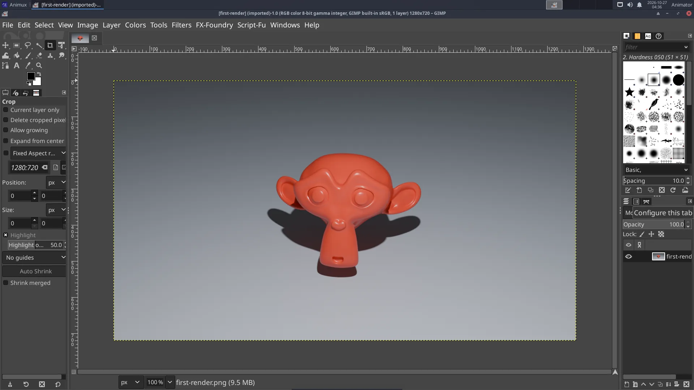
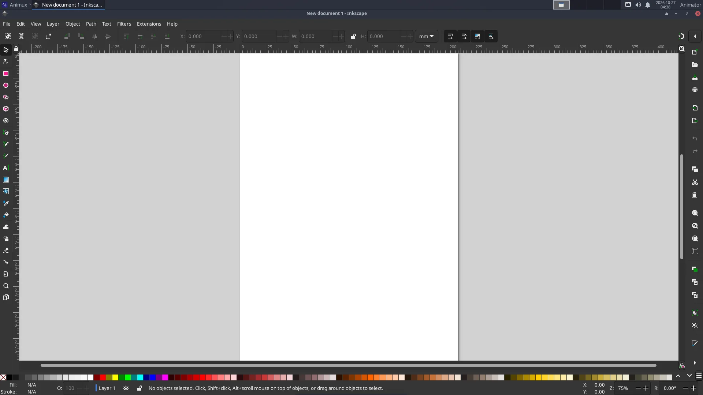
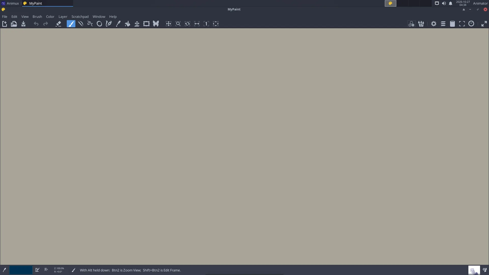

| Program | Best for | Start |
|---|---|---|
| GIMP 3.2 | fixing and retouching renders and photos, textures, cut-outs, batch editing | gimp |
| Inkscape 1.4 | logos, titles, clean character designs, backgrounds: shapes that stay sharp at any size (SVG) | inkscape |
| MyPaint 2.0 | fast sketching and concept painting on an endless canvas | mypaint |
| GrafX2 2.8 | pixel art and sprites with palettes | grafx2 |
| mtPaint 3.40 | very quick pixel edits | mtpaint |
| ImageMagick | changing hundreds of images at once from the terminal | convert, mogrify |
GIMP#


Common jobs:
- Adjust a render: Colors → Curves or Levels; Colors → Hue-Saturation.
- Cut out a background: Tools → Selection Tools → Foreground Select, then Layer → Transparency → Add Alpha Channel and delete.
- Make a texture tile seamlessly: Filters → Map → Tile Seamless.
- Resize: Image → Scale Image. Export: File → Export As (GIMP's own format is
.xcf; Export writes PNG/JPEG). - Non-destructive filters (new in GIMP 3): filters stay editable on the layer; click the fx icon in the Layers panel to change or remove them.
- G'MIC (hundreds of extra effects: painterly looks, denoise, cartoon) is not available for GIMP 3.2 on Animux yet. The previous GIMP 2.10 with G'MIC is still installed: type
gimp.debianin a terminal and use Filters → G'MIC-Qt there.
GIMP 3.2, Krita 5.3 and Inkscape 1.4
Animux r16.1 (_25) includes them; Debian's Krita 5.1 and Inkscape 1.2 are no longer on the ISO, and GIMP 2.10 stays as gimp.debian for G'MIC. Animux r16 (_21) shipped only GIMP 2.10, Krita 5.1 and Inkscape 1.2 from Debian 12; there, the packages animux-gimp, animux-krita and animux-inkscape add the official current versions (the menu entries and the commands gimp, krita and inkscape then start the new versions). Install them like a guide update (package files or, once online, sudo apt install animux-gimp animux-krita animux-inkscape).
AI assistants in GIMP, Krita and Inkscape
An AI assistant can work in the new GIMP, Krita and Inkscape through MCP: animux-mcp gimp on, animux-mcp krita on, animux-mcp inkscape on. See AI agents.
Inkscape#


- Draw with the rectangle, ellipse, star and Bézier pen tools; colour with Object → Fill and Stroke (Ctrl+Shift+F).
- Text for titles: T tool; convert to shapes with Path → Object to Path before sharing the file.
- Export PNG at any size: File → Export (Ctrl+Shift+E). Inkscape files (SVG) also open in Blender (File → Import → SVG) and Synfig.
From the terminal: inkscape title.svg --export-type=png --export-width=1920.
GIMP also works without a window, for scripts and AI agents, with Python (GIMP 3 API):
gimp-console -i --batch-interpreter=python-fu-eval -b "exec(open('my_script.py').read())" --quit
MyPaint#


Press Tab to hide the panels and paint full screen. The canvas grows as you paint. Save as .ora (OpenRaster, opens in Krita and GIMP).
ImageMagick: many images at once#
mogrify -resize 50% *.png # make every PNG half size (overwrites!)
mogrify -format jpg *.png # convert all PNG to JPEG
convert in.png -gravity south -pointsize 48 -annotate +0+20 "Shot 10" out.png
montage frame_*.png -tile 6x -geometry 320x180+4+4 contact-sheet.png
Work on a copy of your files: mogrify changes them in place.